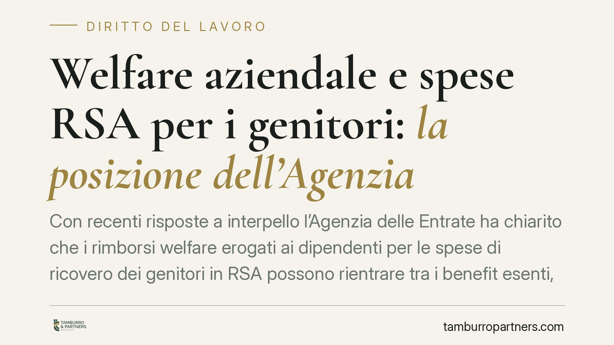

Welfare aziendale e spese RSA per i genitori: la posizione dell'Agenzia
Con recenti risposte a interpello l'Agenzia delle Entrate ha chiarito che i rimborsi welfare erogati ai dipendenti per le spese di ricovero dei genitori in RSA possono rientrare tra i benefit esenti, senza necessità di convivenza né di familiare fiscalmente a carico. Un'apertura che amplia il perimetro dei piani welfare e impone alle imprese una revisione dei regolamenti interni.

Il fatto
L'Agenzia delle Entrate è tornata sul tema del welfare aziendale con alcune risposte a interpello dedicate ai rimborsi per l'assistenza dei familiari anziani. La lettura offerta riguarda le spese sostenute per il ricovero dei genitori del dipendente in una residenza sanitaria assistenziale (RSA).
Due punti concentrano l'attenzione. Primo: per l'esenzione non è richiesto che il genitore conviva con il lavoratore, né che risulti fiscalmente a carico. Secondo: nella stessa logica sono stati ritenuti ammissibili anche rimborsi di spese scolastiche materialmente pagate dal coniuge del dipendente.
*Nota sulla datazione degli interpelli.* Gli estremi numerici e l'anno di pubblicazione delle risposte richiamate dalla fonte giornalistica vanno verificati alla fonte ufficiale (banca dati documenti dell'Agenzia) prima di ogni utilizzo operativo. In questa sede ci limitiamo a riportare l'orientamento interpretativo, senza assumere come certi numero e annualità di protocollo.
Inquadramento normativo
La base è l'art. 51, comma 2, lett. f-ter) del TUIR (d.P.R. 917/1986). La norma esclude dal reddito di lavoro dipendente le somme e i servizi erogati dal datore di lavoro per la fruizione, da parte dei familiari indicati nell'art. 12 del TUIR, di servizi di assistenza ai soggetti anziani o non autosufficienti.
Qui si innesta il chiarimento. Dopo l'introduzione dell'assegno unico universale (d.lgs. 230/2021), l'art. 12 del TUIR ha perso rilievo come base delle detrazioni per figli minori, ma continua a operare come catalogo dei familiari cui la disciplina di favore fa rinvio. Secondo la lettura dell'Agenzia, il richiamo dell'art. 12 va coordinato con la nozione di familiare desumibile dall'art. 433 del codice civile (persone tenute agli alimenti: tra queste i genitori). È questo raccordo — attribuito espressamente alle risposte a interpello, e non a una deduzione di chi scrive — che consente di superare i requisiti di convivenza e di carico fiscale.
Un punto va tenuto fermo: le risposte a interpello non sono fonti normative. Vincolano l'Amministrazione solo verso il contribuente istante e per il caso prospettato. Costituiscono prassi orientativa, utile a ridurre il rischio di contestazione, non certezza assoluta.
Cosa cambia in concreto
Tre effetti pratici.
- Platea più ampia. Il dipendente può ottenere il rimborso esente delle spese RSA del genitore anche se questi vive altrove e non è a suo carico. Cade una barriera che di fatto escludeva molte situazioni familiari reali.
- Rilevanza del pagamento del coniuge. L'esenzione può reggere anche quando la spesa è stata materialmente sostenuta dal coniuge del lavoratore, purché documentata e riferibile al nucleo.
- Efficacia dell'interpretazione nel tempo. L'orientamento ha natura *ricognitiva*: chiarisce come leggere una norma già in vigore, non introduce una regola nuova con decorrenza propria. Ne consegue che può valere anche per le annualità ancora aperte e accertabili. Sul piano operativo ciò può tradursi in rettifiche via conguaglio o, dove serve, dichiarazione integrativa: valutazioni da compiere caso per caso, alla luce dei termini.
Attenzione al perimetro dell'esenzione
Non tutto ciò che la RSA fattura è esente. L'agevolazione copre le spese di assistenza ai soggetti anziani o non autosufficienti. Le componenti puramente alberghiere e accessorie (vitto, alloggio, servizi non sanitari) seguono una logica diversa e possono restare fuori dall'esenzione.
La distinzione non è formale: incide sulla quota effettivamente detassabile. Occorre quindi una fatturazione che separi con chiarezza le voci di assistenza da quelle di ospitalità.
Cosa fare in concreto
- Verificate gli estremi degli interpelli sulla banca dati ufficiale dell'Agenzia prima di aggiornare policy o comunicazioni ai dipendenti.
- Rivedete il regolamento welfare per includere, con formulazione esplicita, le spese RSA dei genitori e i requisiti documentali richiesti.
- Richiedete fatturazione dettagliata alla struttura, con separazione tra prestazioni di assistenza e componenti alberghiere.
- Definite un iter di raccolta prove su parentela, effettività della spesa e soggetto pagatore, coniuge incluso.
- Valutate le annualità aperte per capire se ricorrono i presupposti di rettifica, coordinandovi con il consulente fiscale.
Disclaimer
Contributo informativo a cura di Tamburro & Partners – Avv. Giuseppe Tamburro. Non costituisce parere legale.
Ogni storia di lavoro ha i suoi tempi.
Se gestisci HR e vuoi un confronto su contenzioso, ispezioni o licenziamenti, scrivi allo studio. Ti rispondiamo entro un giorno lavorativo.